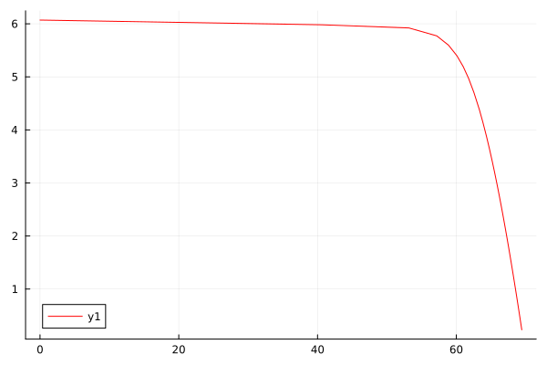

Electrochemistry System
PhotovoltaicCell
To use PhotovoltaicCell(), we design a resistor called vari_Resistor whose resistance value changes with time. Then we can see the I-U curve of PhotovoltaicCell with different loads.
Equivalent circuit diagram of PhotovoltaicCell():

using ModelingToolkit, DifferentialEquations
using Ai4EComponentLib.Electrochemistry
using Plots
function vari_Resistor(; name)
@named oneport = OnePort()
@unpack v, i = oneport
eqs = [
v ~ i * t
]
extend(ODESystem(eqs, t, [], []; name=name), oneport)
end
@named Pv = PhotovoltaicCell()
@named R = vari_Resistor()
@named ground = Ground()
eqs = [
connect(Pv.p, R.p)
connect(Pv.n, R.n, ground.g)
]
@named OdeFun = ODESystem(eqs, t)
@named model = compose(OdeFun, [Pv, R, ground])
sys = structural_simplify(model)
prob = ODEProblem(sys, [], (0.0, 300.0))
sol = solve(prob)retcode: Success
Interpolation: specialized 3rd order "free" stiffness-aware interpolation
t: 55-element Vector{Float64}:
0.0
1.0e-6
1.1e-5
0.00011099999999999999
0.0011109999999999998
0.011110999999999996
0.11111099999999996
1.1111109999999995
6.79035935117457
8.978148213920168
⋮
159.10880840336685
173.4801253245643
189.1756997486783
206.31752801865935
225.03881424518733
245.48515123044803
267.81547719830417
292.2035686705326
300.0
u: 55-element Vector{Vector{Float64}}:
[6.070161231912765]
[6.070161218944301]
[6.070161086382273]
[6.070159760762311]
[6.070146504594543]
[6.070013946101201]
[6.068688679524139]
[6.055467772362445]
[5.981307175281362]
[5.921765490958639]
⋮
[0.4349347898787152]
[0.3991446222812544]
[0.3662305704476482]
[0.3359725683697224]
[0.30816564410432495]
[0.2826189866654537]
[0.25915547745658996]
[0.23761065441016743]
[0.2314575832133179]plot(sol[R.p.v], sol[R.p.i], color = "red")
PEMElectrolyzer
Using above PhotovoltaicCell to drive Electrolyzer, then we build a PVEL system. In default paraments, we can know how the system works.
Equivalent circuit diagram of PEMElectrolyzer():

using ModelingToolkit, DifferentialEquations
using Ai4EComponentLib.Electrochemistry
@named Pv = PhotovoltaicCell()
@named El = PEMElectrolyzer()
@named ground = Ground()
eqs = [
connect(Pv.p, El.p)
connect(Pv.n, El.n, ground.g)
]
@named OdeFun = ODESystem(eqs, t)
@named model = compose(OdeFun, [Pv, El, ground])
sys = structural_simplify(model)
u0 = [
El.m_H_2 => 0.0
El.∂_m_H_2 => 0.0
]
prob = ODEProblem(sys, u0, (0.0, 30.0))
sol = solve(prob)retcode: Success
Interpolation: specialized 3rd order "free" stiffness-aware interpolation
t: 29-element Vector{Float64}:
0.0
1.0e-6
1.1e-5
0.00011099999999999999
0.0011109999999999998
0.008439887065773926
0.020796255796253802
0.03442494139216535
0.052116653461119405
0.07210657583204284
⋮
0.6700908105173512
0.7799452514963259
1.1065977951333883
1.433250338770451
2.0130301426881534
3.83094485507726
9.416466362176456
28.63960936303355
30.0
u: 29-element Vector{Vector{Float64}}:
[0.0, 0.0, 6.063727595681822]
[1.8307680149829602e-14, 3.661521505842432e-8, 6.063727595681835]
[2.215053561356834e-12, 4.0271943799070087e-7, 6.063727595681835]
[2.2537214333319225e-10, 4.058970969463909e-6, 6.063727595681835]
[2.239920344148744e-8, 4.014448437387311e-5, 6.063727595681835]
[1.2189296098963561e-6, 0.00027901338737525, 6.063727595681835]
[6.69070409685778e-6, 0.0005882354978314793, 6.063727595681835]
[1.6362842524229996e-5, 0.0008126644963035811, 6.063727595681835]
[3.224746590988234e-5, 0.0009592361733792534, 6.063727595681835]
[5.185457979379007e-5, 0.0009818115051539894, 6.063727595681835]
⋮
[0.00012667436955623627, 9.372195131969263e-7, 6.063727595681835]
[0.00012671057762334218, -3.961253864583832e-8, 6.063727595681835]
[0.00012669665417256172, 3.353379177334356e-8, 6.063727595681835]
[0.00012669753307424983, 1.060292541914433e-9, 6.063727595681835]
[0.00012669772793681163, -2.6321612955817163e-10, 6.063727595681835]
[0.0001266977465289514, 6.3591890732822245e-12, 6.063727595681835]
[0.00012669775281945505, 8.101659530524139e-12, 6.063727595681835]
[0.00012669775355874052, 3.3013910387812284e-13, 6.063727595681835]
[0.00012669775357165324, 6.770560764356629e-14, 6.063727595681835]Get states of system by states()
states(sys)3-element Vector{SymbolicUtils.Term{Real, Base.ImmutableDict{DataType, Any}}}:
El₊m_H_2(t)
El₊∂_m_H_2(t)
El₊i(t)Check voltage, current and mass yield of electrolyzer. The working point (El.v,El.i) can be found in I-U curve above.
sol[El.v]29-element Vector{Float64}:
2.946032926494929
2.9460329264949316
2.9460329264949316
2.9460329264949316
2.9460329264949316
2.9460329264949316
2.9460329264949316
2.9460329264949316
2.9460329264949316
2.9460329264949316
⋮
2.9460329264949316
2.9460329264949316
2.9460329264949316
2.9460329264949316
2.9460329264949316
2.9460329264949316
2.9460329264949316
2.9460329264949316
2.9460329264949316sol[El.i]29-element Vector{Float64}:
6.063727595681822
6.063727595681835
6.063727595681835
6.063727595681835
6.063727595681835
6.063727595681835
6.063727595681835
6.063727595681835
6.063727595681835
6.063727595681835
⋮
6.063727595681835
6.063727595681835
6.063727595681835
6.063727595681835
6.063727595681835
6.063727595681835
6.063727595681835
6.063727595681835
6.063727595681835sol[El.m_H_2]29-element Vector{Float64}:
0.0
1.8307680149829602e-14
2.215053561356834e-12
2.2537214333319225e-10
2.239920344148744e-8
1.2189296098963561e-6
6.69070409685778e-6
1.6362842524229996e-5
3.224746590988234e-5
5.185457979379007e-5
⋮
0.00012667436955623627
0.00012671057762334218
0.00012669665417256172
0.00012669753307424983
0.00012669772793681163
0.0001266977465289514
0.00012669775281945505
0.00012669775355874052
0.00012669775357165324